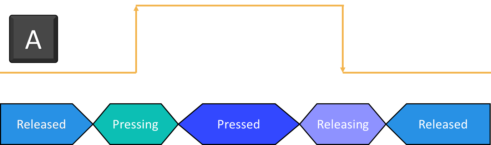

Button states

The input API defines four valid states for a button. The transition between different states is the same no matter which platform Evergine is running. When an input key event is raised by the operating system, it is received by an ButtonStateTracker that handles the state changes of the key.
States
| State | Description |
|---|---|
| Released | The key or button is not pressed for more than one frame in a row. |
| Pressing | The key or button is pressed and is transitioning from Released to Pressed state. This state is an intermediate state (rising edge) and will last only one frame. |
| Pressed | The key or button is pressed for more than one frame in a row. |
| Releasing | The key or button is not pressed and is transitioning from Pressed to Released state. This state is an intermediate state (falling edge) and will last only one frame. |
Tip
Pressing and Releasing states are very useful to trigger an action only once every time a key is pressed.